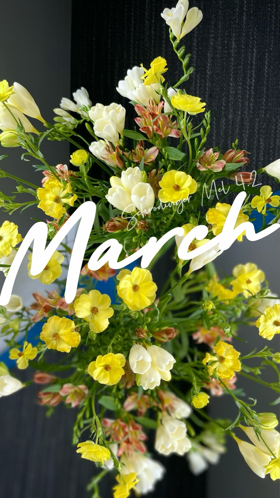

☕ 老母亲疯会
让家长被理解，让情绪被看见。很多亲子矛盾的根源，不在于孩子不听话，而在于家长长期压抑自我、背负多重压力、陷入育儿执念，情绪无处释放、认知固化。我为家长搭建专属松弛空间，翻译家长的隐性情绪、化解育儿执念，让家长先治愈自己，再温柔陪伴孩子。
心理学适配逻辑：依托家长角色压力、情绪耗竭、认知偏差与身份认同心理。很多亲子矛盾的根源，不在于孩子不听话，而在于家长长期压抑自我、背负多重压力、陷入育儿执念，情绪无处释放、认知固化。我作为组织者，为家长搭建专属松弛空间，翻译家长的隐性情绪、化解育儿执念，让家长先治愈自己，再温柔陪伴孩子。
专为家长群体打造情绪释放、自我复盘、彼此赋能的专属平台。跳出"家长必须坚强、必须完美"的固化枷锁，让妈妈们暂时卸下育儿、家庭、职场的多重身份，回归自我、倾诉自我、治愈自我。我以双向共情为核心，让每一位家长的委屈、疲惫、焦虑都被看见、被理解、被治愈，在彼此的经验共鸣中跳出育儿内耗，优化亲子相处模式。


本次活动以心理剧为核心形式开展，结合专业心理剧疗法帮助家长梳理内心情绪。生活里，很多复杂的感受、纠结的情绪难以用语言精准描述，藏在心底慢慢堆积，既影响自身状态，也容易引发家庭摩擦。而心理剧借助舞台演绎、角色扮演的形式，让参与者把平日里说不清、道不明的情绪、心结与生活场景具象化呈现出来。
我作为组织者，引导大家分组编排、登台表演，将育儿日常、内心挣扎、亲子相处中的矛盾场景一一还原。在表演、观看、互动复盘的过程中，大家跳出当局者的视角，以旁观者的身份看清自身情绪来源与相处模式。不少家长表示，当情绪通过表演被表达出来的那一刻，积压许久的压抑感也随之消散。
借助心理剧的表达与疗愈作用，参与者不仅释放了负面情绪，也学会换位思考，读懂自己行为背后的心理动因。大家不再一味压抑感受，也能更平和地看待亲子间的分歧，学会用更柔软、理性的方式面对生活与育儿难题。

本次减压活动选址静谧松弛的瑜伽馆，为家长打造安全、私密、无评判的倾诉空间。当代家长长期背负育儿压力、家庭琐事、职场焦虑，常年处于情绪紧绷、自我缺失的状态，却很少有专属时间释放情绪、梳理内心。
本次参与的十位妈妈互不相识，但在松弛安全的氛围里，大家大胆倾诉育儿委屈、生活疲惫、情绪内耗，释放平日无法言说的压力。没有评判、没有说教、没有攀比，只有真诚的共情与接纳，每一位参与者都实现了深度的情绪宣泄。
同时我通过心理学小游戏、认知体验实验，带领大家拆解日常的育儿执念。很多家长终于读懂：多数亲子矛盾，都源于自己的主观臆断。很多时候"孩子不懂事、孩子偷懒、孩子叛逆"，只是家长的片面认知，孩子实则有自己的难处、压力与成长节奏。这场活动让家长放下执念、放下焦虑，学会共情孩子、接纳自己。
为了让治愈与赋能常态化，我带动在场家长自发成立「老母亲的微笑」微信群，搭建长期线上陪伴、情感支撑、经验共享的平台。从此家长不再孤军奋战，日常可以互相倾诉困惑、分享经验、彼此鼓励，形成持续的正向赋能氛围。
在老母亲疯会系列活动中，我是家长情绪与自我的翻译官：
• 把「家长说不清的焦虑疲惫」翻译成可被理解、可被治愈的情绪
• 把「固化的育儿执念」翻译成通透松弛的成长认知
• 把「孤军奋战的育儿之路」翻译成彼此支撑、抱团成长的温暖旅程